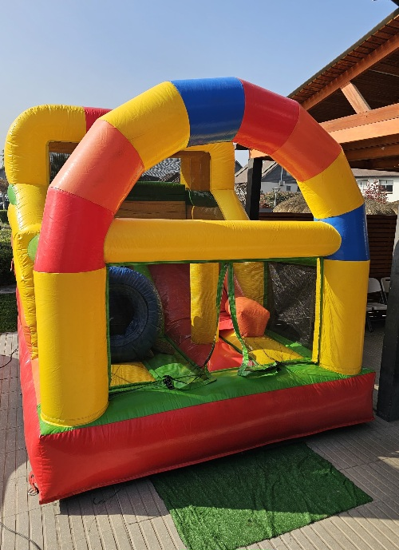
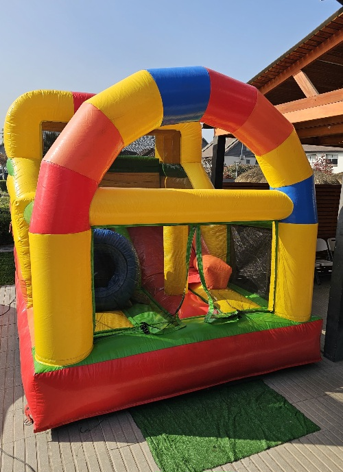
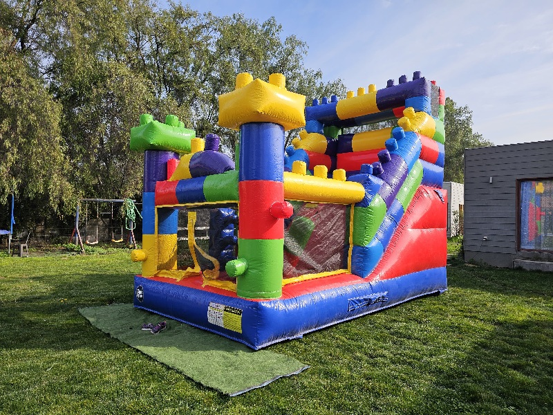
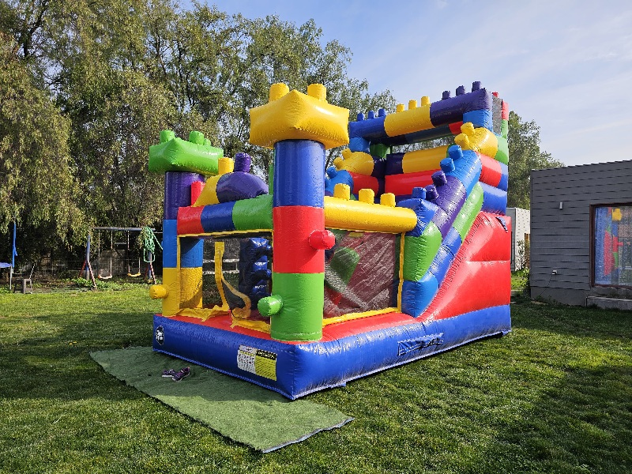

Castillo Mini Lego
Precio: $70.000
Edad recomendada: Hasta 5 años
Capacidad: 6 niños
Medidas: Alto 3m x Ancho 3m x Largo 5m
Se debe considerar entre 0.5 y 1 metro extra para la turbina y que el juego no quede justo en el espacio destinado.
Hermoso y exclusivo juego inflable, ¡único en Chile! Porque los más pequeños merecen divertirse con juegos acorde a su edad.
Reservar por WhatsApp 

 
